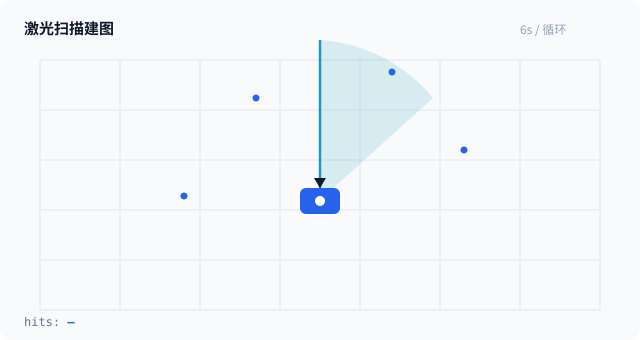
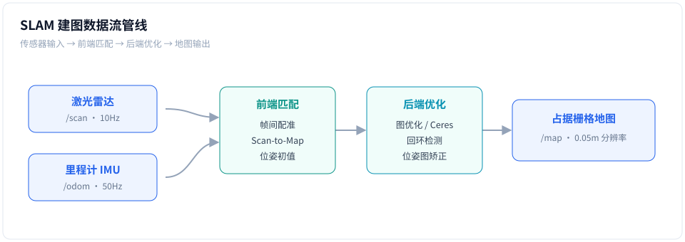

EXP-01 · 8 学时 · 难度 ★★★
激光 SLAM 建图与导航原理
小车进入一个从没去过的仓库，怎么先"画"出一张地图，再让 Nav2 在地图上从 A 点走到 B 点？本实验从直觉出发讲清 SLAM 的两大难题——"我在哪"与"环境长什么样"——是如何被同时解决的。
01它要解决什么问题
想象把你关进一个全黑的仓库，只给你一把"激光尺"。你要边走边回答两个问题：我现在在哪个位置？以及周围哪里可以走、哪里是墙？——这正是移动机器人每天在做的事。
传感器观测
/scan 10Hz
→
我在哪？
定位 Localization
→
环境什么样？
建图 Mapping
→
怎么去目标？
规划 Planning
💡 鸡生蛋问题：要定位需要先有地图，要建图需要先知道自己的位置。SLAM（Simultaneous Localization And Mapping）的"同时"二字，就是同时求解这两件事。
02核心原理：SLAM 是怎么"同时"做的
把过程拆成一个不断重复的循环：预测 → 观测 → 校正 → 融合。
① 运动预测
根据轮速计/IMU 推算"我大概移动到了哪"（里程计），给出位姿初值。
② 激光观测
当前这束激光打到墙上的一排"命中点"，和已有地图做配准（scan-to-map）。
③ 误差校正
配准的残差反推位姿偏差，修正"我在哪"，得到更准的当前帧位姿。
④ 地图融合
把命中点以当前位姿写进占据栅格；回环检测消除长距离累积漂移。
| 关键量 | 含义 | 典型值（小车 C1） |
|---|---|---|
| 栅格分辨率 | 地图每个格子代表的实际边长 | 0.05 m |
| 激光频率 | 每秒多少次全周扫描 | 10 Hz |
| 地图图层 | 占据 / 空闲 / 未知三态 | free / occupied / unknown |
| 位姿表示 | 平移 (x, y) + 朝向 θ | map → base_link |
⚠️ 常见误区：SLAM 建出的地图不是照片，而是概率栅格——每个格子存的是"这里被挡住的概率"。这就是为什么没扫到的地方显示为灰色"未知"。
03原理动画：一束激光如何长出一张地图
看下方动画：机器人原地旋转，扫描光束扫过墙面；每命中一次就在地图上留下一个蓝色命中点，连续命中连成绿色墙线。

💡 看不懂就暂停：重点观察右下角
hits 计数——命中点越多，地图越完整；停留越久，未知灰区就越少。04技术框架与数据流
在 ROS 2 里，这套循环被拆成四个可复用的模块，以话题（topic）方式串成管线：

# 一键启动建图（SLAM Toolbox） ros2 launch slam_toolbox online_async_launch.py \ use_sim_time=false resolution:=0.05 # 观察数据流：谁在发布？谁在订阅？ ros2 topic list # /scan /odom /map /tf ros2 topic hz /scan # 应稳定在 ~10Hz ros2 run tf2_ros tf2_echo map base_link # 实时查看位姿
💡 TF2 是隐形的线：所有模块其实都在问 TF 树同一个问题——"
base_link 相对 map 在哪？"。建图时 map→odom 由 SLAM 发布，导航时由 AMCL 发布。05管路演示视频
下面是小车在真实场景中边走边建图的录像（占位素材，后续替换为同名文件即自动生效）：
063D 视角：小车、雷达与扫描面
激光雷达装在车顶旋转扫描，扫描的是一个水平面——所以它"看得见"墙和桌腿，看不见玻璃和悬空横梁。
🖱️ 拖动旋转 · 滚轮缩放 · 雷达与扫描环实时转动（自动旋转，交互后接管）
动画 1-2｜小车 C1 底盘 + 顶置激光雷达：蓝色车身、青色旋转雷达头、扇形扫描面
07互动沙盘：亲手调一调寻路
地图有了，下一步是"选路"。下面的沙盘让你亲手改地图、调代价参数，看 A* 如何在绕远与穿越之间做权衡：
互动 1-1｜① 拖动画障碍墙 → ② 调"绕行代价"滑杆 → ③ 点运行，观察绿色路径与蓝色探索节点的变化
💡 试试这个：把权重调到 8 再运行——路径会变"激进"，倾向贴着障碍穿缝；调回 1 则更平滑保守。这就是 Nav2 代价地图权重的直观版。
08实操流程
- 启动雷达与底盘，确认 ros2 topic hz /scan ≈ 10Hz
- 启动 SLAM Toolbox，rviz 中观察 /map 逐渐成形
- 遥控走一圈闭环，保存地图 ros2 run nav2_map_server map_saver_cli -f my_map
- 启动 Navigate_to_pose，在 rviz 选目标点，观察全局/局部规划器绕开障碍
- 录一段实机视频放入 videos/，替换演示占位素材
09验收清单
- 地图完整覆盖实验区域，未知灰区 < 15%
- 走廊两端往返后，地图墙体无明显"重影"（漂移合格）
- 指定 A→B 目标，导航成功且全程不碰撞
- 能口头解释 SLAM 循环四步与 map→odom→base_link TF 链